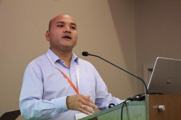
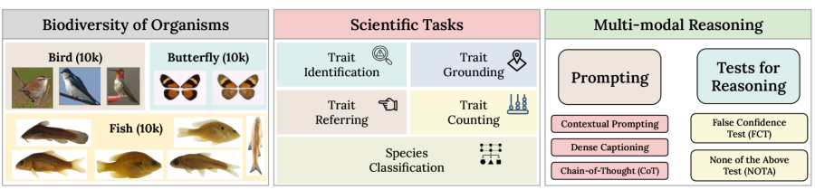
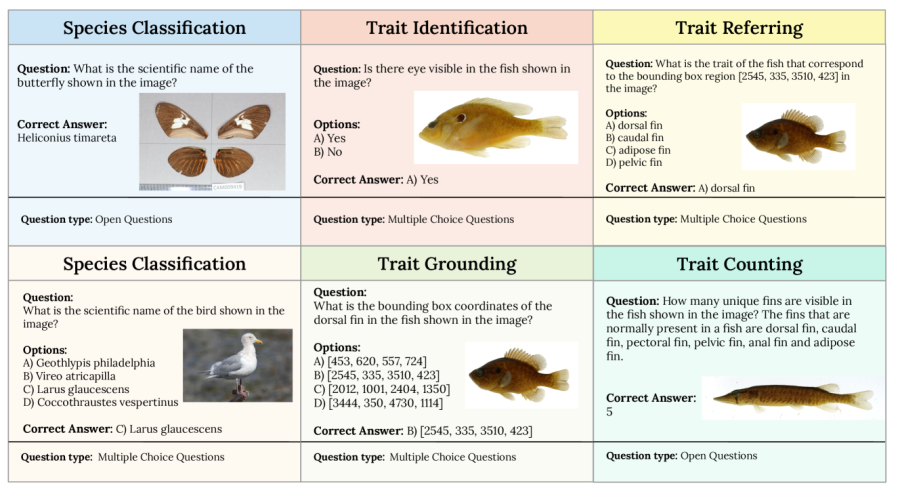

Imageomics Institute researchers have introduced a new digital framework to assign a unique identifier, or “passport,” to individual wild animals, allowing scientists to track and preserve data on species across their lifetimes.
The study presents the Movebank Life History Museum (MoMu) and the globally unique animal ID (UAID), two tools aimed at improving wildlife data management. This dataset, consisting of 469,000 question-answer pairs derived from 30,000 images of fishes, birds, and butterflies, aims to assess the performance of 12 state-of-the-art VLMs on various scientifically relevant tasks.
The work was led by a collaboration of scientists from major institutions, including the Max Planck Society, the British Ecological Society, and The Ohio State University, with support from organizations like NASA and the Gordon and Betty Moore Foundation.
VLM4Bio—a novel benchmark dataset designed to evaluate pre-trained vision-language models (VLMs) in the context of biological trait discovery.
Team: M. Maruf, Arka Daw, Kazi Sajeed Mehrab, Harish Babu Manogaran, Abhilash Neog, Medha Sawhney, Mridul Khurana, James P. Balhoff, @Yasin Bakı¸, Bahadir Altintas, Matthew Thompson, Elizabeth Campolongo, Ph.D., Josef C. Uyeda, Hilmar Lapp, Henry Bart, Paula Mabee, Yu Su, Wei-Lun (Harry) Chao, Chuck Stewart, Tanya Berger-Wolf, Wasila Dahdul, Anuj Karpatne

This digital system seeks to standardize and store a wide range of wildlife data—photos, genetic samples, behavioral observations, and even disease screenings—that are often scattered across various databases or lost after field studies. The UAID, a six-digit alphanumeric code, will serve as a permanent marker for animals, much like tags used for museum specimens, but for living creatures observed in the wild. These IDs will be linked to MoMu, a central repository that can hold metadata for millions of individual animals.
“This system has the potential to revolutionize wildlife research,” said Martin Wikelski, one of the lead authors. “By tracking an animal’s entire life history digitally, we can significantly improve our understanding of species behavior, migration, and conservation needs.”
Wildlife research has long struggled with fragmented data, especially as researchers track animals across regions or years. Existing databases often lack cohesive ways to identify the same animal in different studies, which can lead to redundant efforts or loss of valuable information. With the new UAID system, scientists and even the public, through citizen science platforms, can contribute to building comprehensive life histories for individual animals.
The initiative is expected to bolster conservation efforts, helping researchers and policymakers make more informed decisions. As the system grows, the MoMu will not only aid scientists but could become an educational tool for the public, deepening engagement with wildlife and conservation efforts.
The next steps include expanding the UAID system to incorporate historical data and integrating with existing animal tracking platforms like the Ocean Tracking Network. Researchers also aim to improve public participation, allowing citizen scientists to contribute to animal life histories through platforms like the Animal Tracker app.
